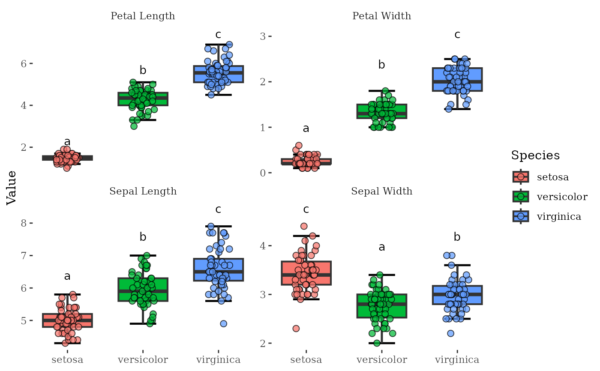
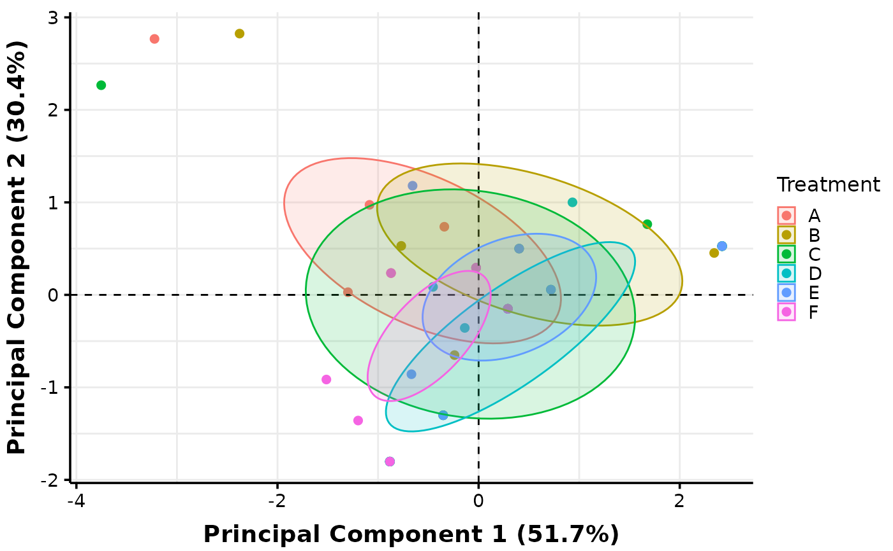
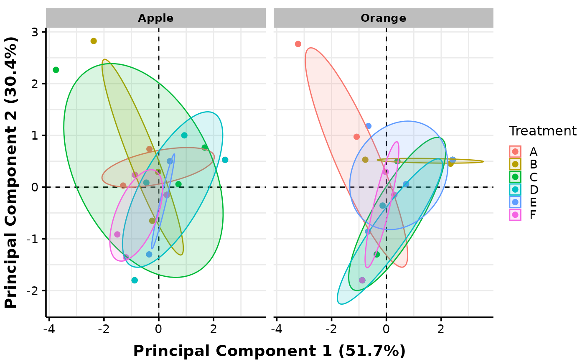

Conducts PCA, LDA, and MANOVA. Outputs include tables of statistical results, PCA plots, and Boxplots of each dependent variable. Plots can be customized using pca_ and boxplots_ prefixed arguments. Supports one- or two-factor analyses. In two-factor analyses, additional plots may be created with facets and/or pooling of values across levels of a selected factor, chosen using the arguments factors_pool and factors_facet. By default, saves results in a Word document, but allows exports as .pptx, .png, and/or R objects for further edits. A tutorial on how to generate various outputs from MultiVar() is available under Examples.
Usage
MultiVar(
multivar_db,
values_cols,
factors_cols,
factors_pool = c("col1", "col2"),
factors_facet = "none",
pca_ellipse = c("confidence"),
pca_facet_scales = "fixed",
pca_labels = NULL,
pca_shapes = FALSE,
pca_grid = TRUE,
missing_method = "imputation",
scale = TRUE,
center = TRUE,
boxplot_filled = TRUE,
boxplot_x_angle = NULL,
boxplot_x_wrap = NULL,
boxplot_x_lab = FALSE,
boxplot_x_text = TRUE,
boxplot_legend_pos = "right",
boxplot_points = TRUE,
boxplot_outliers = FALSE,
boxplot_letters = TRUE,
boxplot_var_sep = FALSE,
colours = NULL,
colours_theme = NULL,
plot_out_png = FALSE,
plot_out_pptx = FALSE,
plot_out_R = TRUE
)Arguments
- multivar_db
A dataframe with two types of columns. The first holds numeric values of the multivariate outcome variables, with each column containing one variable. The second type holds categories (factor levels), with each column containing one factor. An example dataframe can be viewed by running
View(data(multivar_db_ex))in the R console.- values_cols
A numeric vector specifying the order number of columns containing the outcome variables.
- factors_cols
A numeric vector specifying the order number of columns containing the factors. Maximum of two numbers (i.e. factors).
- factors_pool
A character vector indicating the factors which levels are to be pooled across in additional plots. Choose any combination of "col1" and "col2" which refers to the first and second column in
factors_cols. Defaults to c("col1", "col2"). For boxplots, plots with grouping by the chosen factor will also be generated.- factors_facet
A character vector indicating the factors which levels are to be faceted across in additional plots. Choose any combination of "col1" and "col2" which refers to the first and second column in
factors_cols. Defaults to "none" which creates no additional plots.- pca_ellipse
A character vector representing the type of ellipses to draw in PCA plots. Generates a plot for every specified type. Choose any combination of "confidence", "distribution", "convexhull", and/or "none". "confidence" draws ellipses representing the 95 percent confidence interval about the center of multivariate normal data (principal component scores); drawn using
ggpubr::stat_conf_ellipse(). "distribution" represents ellipses expected to cover 95 percent of all multivariate normal data; drawn usingggplot2::stat_ellipse()with argumenttype = "norm". "convexhull" represents the smallest convex polygon enclosing all points; drawn usingggpubr::stat_chull(). For plots without ellipses, include "none". Defaults to c("confidence").- pca_facet_scales
A string indicating whether the x and y axes in pca plots should be held constant across facets or variable. Options are "fixed", "free", "free_x", and "free_y" as according to
ggplot2::facet_wrap(). Defaults to "fixed".- pca_labels
A character vector representing the labels to draw in PCA plots. Choose any combination of "ind" and/or "var". "ind" represents individual point labels by their row number. "var" represents variable loadings drawn as arrows; the arrow length and direction are calculated as in
factoextra::fviz_pca_biplot(). Defaults to NULL (no labels drawn).- pca_shapes
TRUE/FALSE indicating whether to use different shapes for each factor level in PCA plots. Defaults to FALSE. Different shapes are not supported for plots with greater than 6 factor levels.
- pca_grid
Whether to plot grid lines in pca plots. Defaults to TRUE.
- missing_method
A string representing the method to address missing values in
values_cols. Choose from "imputation" or "na_omit". "imputation" fills in missing values with values created (imputed) based on the correlation between variables essentially; accomplished usingmissMDA::imputePCA()with the ncp parametermissMDA::estim_ncpPCA(). "na_omit" removes entire rows of data when at least one NA value is present. This method may result in a significant loss of data. Defaults to "imputation". The choice ofmissing_methodwould affect PCA, LDA, and MANOVA results but likely only to a small degree with few missing values. Has no impact on boxplots and ANOVAs.- scale
Whether to scale variable values (such that SD = 1 for each variable) before PCA or LDA. A common procedure in the z-score normalization of values that commonly precede PCA. It is not recommended to set this to FALSE, unless justified. Defaults to TRUE.
- center
Whether to center variable values (such that mean = 0 for each variable) before PCA or LDA. A common procedure in the z-score normalization of values that commonly precede PCA. It is not recommended to set this to FALSE, unless justified. Defaults to TRUE.
- boxplot_filled
Whether to color the insides of boxplots and points (i.e. fill them). If FALSE, boxplots and points are hollow with colored borders using
colouringgplot2::aes(), instead of usingfill. Defaults to TRUE.- boxplot_x_angle
A number describing the degree of tilt in the x-axis labels of the boxplots. Defaults to NULL (horizontal labels).
- boxplot_x_wrap
The maximum number of characters on a single line that would be split if a space bar is available between them. Defaults to NULL (no text wrapping).
- boxplot_x_lab
Whether to include a title for the x-axis of the boxplots. Defaults to FALSE.
- boxplot_x_text
Whether to include the text for the x-axis of the boxplots. Defaults to TRUE.
- boxplot_legend_pos
A string representing the position of the legend for boxplot. Options are "none", "bottom", "top", "left", "right". Use "none" to remove legend. Defaults to "right".
- boxplot_points
Whether to include points in boxplots. Defaults to TRUE.
- boxplot_outliers
Whether to plot outliers in boxplots. Useful when points have been removed using
boxplot_points = FALSE. Defaults to FALSE.- boxplot_letters
Whether statistical classes, denoted by different letters, should be displayed in boxplots. Classes are determined from pairwise comparisons of the appropriate type. "Faceted" and "Grouped" plots uses the "Conditional" pairwise comparisons with classes summarized in the corresponding table; "Pooled" plots uses "Pooled" comparisons; plots with all factor level combinations in the x-axis ticks uses "Complete" comparisons. Defaults to TRUE.
- boxplot_var_sep
Whether to include boxplots made separately for every variable. Defaults to FALSE.
- colours
A named character vector specifying the colors to use for different factor levels. E.g. For a factor with levels "A", "B", and "C", the
coloursvector may look likec('A' = "brown", B = 'blue', C = '#f8e723'). Defaults to NULL (default ggplot2 colours).- colours_theme
A string representing the color palette to use for plots. Options listed in
ggplot2::scale_colour_brewer()Palettes section. Defaults to NULL.- plot_out_png
Whether to save plots as .png in the working directory. Defaults to FALSE.
- plot_out_pptx
Whether to save plots as editable forms in .pptx in the working directory. Defaults to FALSE.
- plot_out_R
Whether to output plots as ggplot2 objects in a list in R. Defaults to TRUE.
Value
Returns a Word document containing at least the following types of results (in the given order):
Multivariate Analyses:
PC plot(s) illustrating the separation (if any) of PC scores between groups
Correlation plot between individual variables and principal components
Correlation table summarizing pearson correlation coefficients between all pairs of variables and principal components
Contribution table summarizing contribution values of variables to principal components
Contribution table summarizing contribution values of variables to major linear discriminants (i.e. to the separation between groups)
MANOVA table summarizing statistical evidence for any effect of factor(s)
(Bonus) Univariate Analyses:
Boxplot(s) comparing values of individual variables across groups.
ANOVA results table (Two-Factor or One-Factor)
Pairwise comparisons table
Details
Several functions published on CRAN are used by MultiVar() for various types of statistical analyses:
- PCA
Uses
stats::prcomp(). Pre-PCA, outcome variables may be scaled or centered usingscaleandcenterarguments, respectively. Missing values may have been imputed usingmissMDA::imputePCA()and ncp parameterncp = missMDA::estim_ncpPCA()$ncp.- LDA
Uses
MASS::lda(). Pre-LDA, values may be scaled, centered, and missing values imputed, with the same methods as described for PCA.- MANOVA
Uses
stats::manova()and subsequentlycar::Anova()with the argumenttype = 3- relevant for analyses with two or more factors. Missing values may have been imputed with the same method described for PCA. By default,stats::manova()omits all rows with missing values. To achieve this inMultiVar(), setmissing_methodargument to "na_omit".- PERMANOVA
Output available upon request. Uses
RVAideMemoire::adonis.II()with the argumentmethod = "euclidean". Missing values may be imputed using the same method described for PCA. By default,RVAideMemoire::adonis.II()omits all rows with missing values. To achieve this inMultiVar(), setmissing_methodargument to "na_omit".- ANOVA
Uses
stats::anova()and subsequentlycar::Anova()with the argumenttype = 3- relevant for analyses with two or more factors.- Pairwise Comparisons
Uses
biotools::mvpaircomp()andemmeans::emmeans()for multivariate and univariate comparisons, both withadjust = "BH". P-values were adjusted using the Benjamini Hochberg procedure to control for a false Discovery Rate of 5 percent.
See also
Link for web documentation.
Examples
# Below is a brief tutorial to help you get various outputs from MultiVar()!
# Lets start simple, with the aim of creating a report for a one-factor dataset
# called iris:
data(iris)
# Data structure:
head(iris, n = 5)
#> Sepal.Length Sepal.Width Petal.Length Petal.Width Species
#> 1 5.1 3.5 1.4 0.2 setosa
#> 2 4.9 3.0 1.4 0.2 setosa
#> 3 4.7 3.2 1.3 0.2 setosa
#> 4 4.6 3.1 1.5 0.2 setosa
#> 5 5.0 3.6 1.4 0.2 setosa
# We can see that columns #1 to #4 contain dependent variables, while column #5 holds
# the factor. Simply feed this information into Multivar()!
MultiVar(multivar_db = iris,
values_cols = 1:4,
factors_cols = 5,
plot_out_R = FALSE) # hide R output for now
# A report is now saved in your working directory, check it out! You can locate your
# working directory using:
getwd()
#> [1] "/home/runner/work/safuncs/safuncs/docs/reference"
# Suppose you wanted a more equipped PCA plot. We can customize our plots using a
# set of arguments indicated with the proper prefix; 'pca_' for PCA plots and
# 'boxplots_' for Boxplots:
MultiVar(multivar_db = iris,
values_cols = 1:4,
factors_cols = 5,
pca_ellipse = c("none", "confidence", "distribution", "convexhull"),
pca_labels = c("var"),
plot_out_R = TRUE)$pca$distribution
#> $none
#>
# If you want to customize the plot beyond the capabilities of MultiVar(), save them
# as editable forms in .pptx using the argument plot_out_ppt or manipulate them further
# in R:
MultiVar(multivar_db = iris,
values_cols = 1:4,
factors_cols = 5,
boxplot_x_angle = 45,
plot_out_R = TRUE)$box$none$facetvariables +
ggthemes::theme_tufte() # Use the thufte theme

## TWO FACTOR CASES
# Real data often have two factors, and MultiVar() produces plots tailored to that.
# At minimum, MultiVar() produces plots with the interaction between two factors as
# x-axis labels or legend labels. This can lead to a lot of levels in the axis or
# legends which look unsightly. Run the code below to see how this looks like! Below
# I am using an example fish mucus dataset with one real factor (Treatment) and one
# fake (Fruits).
data(multivar_db_ex)
head(multivar_db_ex, n = 5)
#> Treatment Severity Stage Muscle.degen Muscle.regen Bacteria Re.epithelization
#> 1 A 3 1 1 0 0 0
#> 2 A 4 0 2 0 2 0
#> 3 A 4 4 1 0 0 2
#> 4 A 4 4 2 1 0 2
#> 5 A 3 3 1 0 0 2
#> Mucous.Cell.Grades Fruits
#> 1 0 Orange
#> 2 0 Orange
#> 3 1 Orange
#> 4 3 Orange
#> 5 1 Apple
MultiVar(multivar_db = multivar_db_ex,
values_cols = 2:5,
factors_cols = c(1, 9),
factors_pool = "none",
factors_facet = "none",
plot_out_R = FALSE)
# Check out the report in your working directory!
# Additional plots can be created with facets or pooling of values across levels of a
# factor. Below we explore the default parameters which consists of 'factors_pool =
# c('col1', 'col2')' and its output:
MultiVar(multivar_db = multivar_db_ex,
values_cols = 2:5,
factors_cols = c(1, 9),
factors_pool = c("col1", "col2"),
plot_out_R = TRUE)$pca$confidence[c("pooled1", "pooled2")]
#> $pooled1
#>
#> $pooled2

#>
# The "col1" specification instructs MultiVar() to create a plot with pooling across
# levels of the first factor specified in 'values_cols', while "col2" refers to the
# second factor.
# Plots with facets can also be created. Below, we facet against levels of the second
# factor (Fruits) which is considered as a nuisance factor in this case:
MultiVar(multivar_db = multivar_db_ex,
values_cols = 2:5,
factors_cols = c(1, 9),
factors_pool = c("col1", "col2"),
factors_facet = c("col2"),
plot_out_R = TRUE)$pca$confidence["facet2"]
#> $facet2

#>
# Check your word document output and you will see that it contains facets and pooling
# for both PCA and boxplots. End of tutorial. Hope it helps!